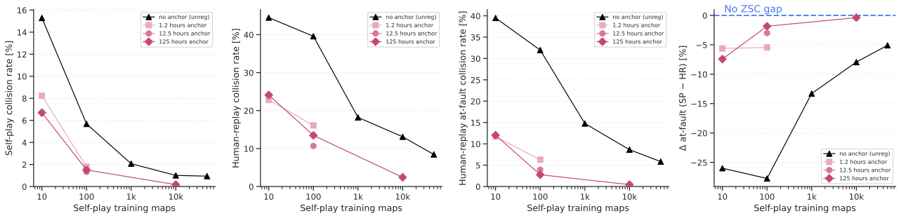
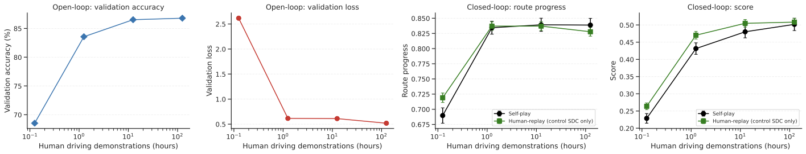
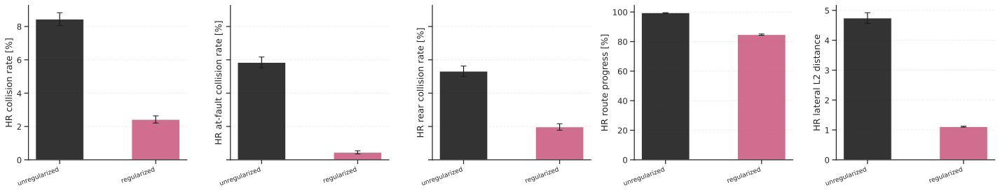

Learn a human anchor
Train a compact behavioral cloning policy from selected human driving demonstrations.
Draft paper site · April 2026
NYU Tandon School of Engineering · NYU Courant · Princeton University
We train driving agents mostly through self-play simulation, then use 30 minutes of human demonstrations as a behavioral anchor. The result is a cheaper recipe for zero-shot coordination with real human driving trajectories.
TL;DR
Pure self-play can discover effective driving policies, but those policies may be behaviorally alien around humans. The paper studies a simple alternative: train a behavioral cloning anchor on a small slice of human demonstrations, then regularize PPO self-play toward that anchor.
Across held-out Waymo Open Motion scenarios, a small anchor pulls the policy toward human-compatible behavior while preserving the scale and robustness advantages of synthetic self-play experience.
Method

Train a compact behavioral cloning policy from selected human driving demonstrations.
Use PPO in simulation so the agent sees billions of synthetic transitions and an automatically evolving curriculum.
Add a KL penalty from the anchor to the policy, keeping the agent effective while making its behavior easier for human drivers to coordinate with.
Evaluation

Results



Media
Self-play rollout video
Placeholder for clips of the policy coordinating with copies of itself.
Human-replay GIF
Placeholder for side-by-side examples of human-compatible behavior.
Baseline comparison
Placeholder for clips showing the failure mode and the anchored policy.
Abstract
Self-play reinforcement learning has recently taken the wheel in autonomous driving. The approach substitutes expensive, large-scale human demonstration data with cheap, large-scale simulation. While cost-effective, agents trained through self-play often behave unpredictably around unseen policies and fail to coordinate with human drivers.
We instead learn driving policies by training on over six years of self-play simulation and 30 minutes of human demonstrations. Our agents achieve zero-shot coordination with real human driving trajectories using 125,000x less human data than imitation learning baselines, at 1/30 the number of GPU hours.
Citation
@misc{cornelisse2026humanlike,
title = {Human-like autonomy emerges from self-play and a pinch of human data},
author = {Cornelisse, Daphne and Hunt, Julian and Zhang, Zixu and Joseph, Kevin and Fernandez Fisac, Jaime and Vinitsky, Eugene},
year = {2026},
note = {Manuscript}
}